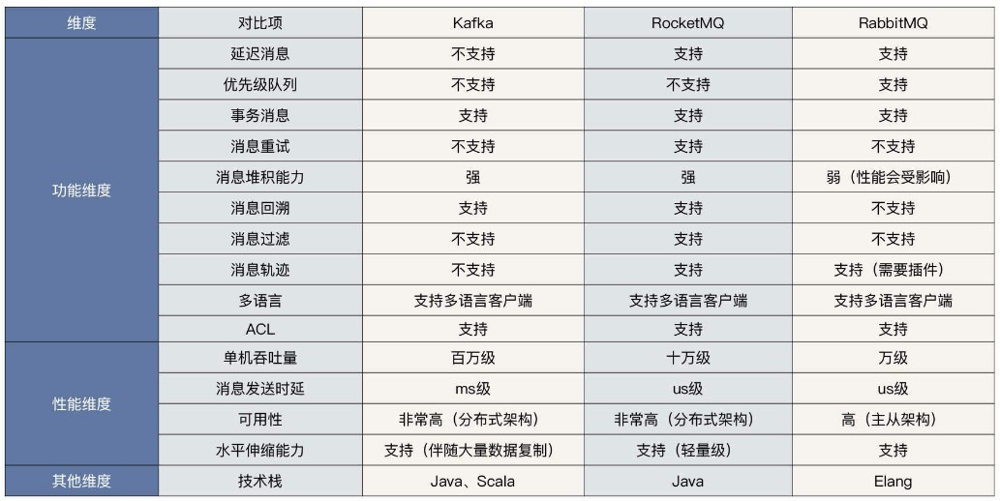

| 功能 | RocketMQ | Kafka | RabbitMQ |
|---|---|---|---|
| 可靠性* | - 同步刷盘 - 异步刷盘 |
异步刷盘，丢数据概率高 | 同步刷盘 |
| 横向扩展能力 | 支持 | 支持 | - 集群扩容依赖前端 - LVS 负载均衡调度 |
| 消费模型* | Push/Pull | Pull | Push/Pull |
| 定时消息* | 支持（只支持18个固定 Level） | 不支持 | 支持 |
| 顺序消息* | 支持 | 支持 | 不支持 |
| 消息堆积能力 | 百亿级别 影响性能 | 影响性能 | 影响性能 |
| 消息堆积查询 | 支持 | 不支持 | 不支持 |
| 消息回溯 | 支持 | 支持（位置，时间） | 不支持 |
| 消息重试 | 支持 | 生产者有重试机制 | 支持 |
| 死信队列 | 支持 | 不支持 | 支持 |
| 性能（常规）* | 非常好 十万级 QPS | 非常好 百万级 QPS | 一般 万级 QPS |
| 性能（万级 Topic 场景） | 非常好 十万级 QPS | 低 | 低 |
| 性能（海量消息堆积场景） | 非常好 十万级 QPS | 低 | 低 |
| 全链路消息轨迹 | 不支持 | 不支持 | 不支持 |
MQ比较[3] #

重点[3] #
- 功能级别不具备一票否决权
- 选型时要特别注意中间件的性能与扩展性
- 需要注重团队技术栈与中间件编程语言的匹配度
参数 #
- Kafka、RabbitMQ、RocketMQ等消息中间件的对比
- https://honeypps.com/mq/kafka-vs-rabbitmq/ 未
- 13 | 技术选型：如何根据应用场景选择合适的消息中间件？ 丁威